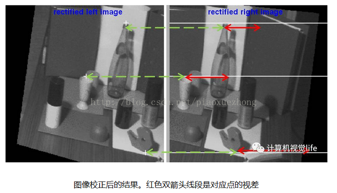

先說一下單/雙目的測距原理區別：
單目測距原理：
先通過圖像匹配進行目標識別（各種車型、行人、物體等），再通過目標在圖像中的大小去估算目標距離。這就要求在估算距離之前首先對目標進行準確識別，是汽車還是行人，是貨車、SUV還是小轎車。準確識別是準確估算距離的第一步。要做到這一點，就需要建立並不斷維護一個龐大的樣本特徵數據庫，保證這個數據庫包含待識別目標的全部特徵數據。比如在一些特殊地區，為了專門檢測大型動物，必須先行建立大型動物的數據庫；而對於另外某些區域存在一些非常規車型，也要先將這些車型的特徵數據加入到數據庫中。如果缺乏待識別目標的特徵數據，就會導致系統無法對這些車型、物體、障礙物進行識別，從而也就無法準確估算這些目標的距離。
單/雙目方案的優點與難點
從上面的介紹，單目系統的優勢在於成本較低，對計算資源的要求不高，系統結構相對簡單；缺點是：（1）需要不斷更新和維護一個龐大的樣本數據庫，才能保證系統達到較高的識別率；（2）無法對非標準障礙物進行判斷；（3）距離並非真正意義上的測量，準確度較低。雙目檢測原理：
通過對兩幅圖像視差的計算，直接對前方景物（圖像所拍攝到的範圍）進行距離測量，而無需判斷前方出現的是什麼類型的障礙物。所以對於任何類型的障礙物，都能根據距離信息的變化，進行必要的預警或製動。雙目攝像頭的原理與人眼相似。人眼能夠感知物體的遠近，是由於兩隻眼睛對同一個物體呈現的圖像存在差異，也稱“視差”。物體距離越遠，視差越小；反之，視差越大。視差的大小對應著物體與眼睛之間距離的遠近，這也是3D電影能夠使人有立體層次感知的原因。
上圖中的人和椰子樹，人在前，椰子樹在後，最下方是雙目相機中的成像。其中，右側相機成像中人在樹的左側，左側相機成像中人在樹的右側，這是因為雙目的角度不一樣。再通過對比兩幅圖像就可以知道人眼觀察樹的時候視差小，而觀察人時視差大。因為樹的距離遠，人的距離近。這就是雙目三角測距的原理。雙目系統對目標物體距離感知是一種絕對的測量，而非估算。
理想雙目相機成像模型
根據三角形相似定律：
（1）
由式（1），解方程得：
（2）
z=b*f/d, x=z*xl/d, y=z*y/f （3）
根據上述推導，要求得空間點P離相機的距離（深度）z，必須知道：
1、相機焦距f，左右相機基線b（可以通過先驗信息或者相機標定得到）。
2、視差：，即左相機像素點(xl, yl)和右相機中對應點(xr, yr)的關係，這是雙目視覺的核心問題。
重點來看一下視差（disparity），視差是同一個空間點在兩個相機成像中對應的x坐標的差值，它可以通過編碼成灰度圖來反映出距離的遠近，離鏡頭越近的灰度越亮；
極線約束
对于左图中的一个像素点，如何确定该点在右图中的位置？需要在整个图像中地毯式搜索吗？当然不用，此时需要用到极线约束。如上图所示。O1，O2是两个相机，P是空间中的一个点，P和两个相机中心点O1、O2形成了三维空间中的一个平面PO1O2，称为极平面（Epipolar plane）。极平面和两幅图像相交于两条直线，这两条直线称为极线(Epipolar line)。
P在相机O1中的成像点是P1，在相机O2中的成像点是P2，但是P的位置是未知的。我们的目标是：对于左图的P1点，寻找它在右图中的对应点P2，这样就能确定P点的空间位置。
极线约束（Epipolar Constraint）是指当空间点在两幅图像上分别成像时，已知左图投影点p1，那么对应右图投影点p2一定在相对于p1的极线上，这样可以极大的缩小匹配范围。即P2一定在对应极线上，所以只需要沿着极线搜索便可以找到P1的对应点P2。
非理性情况：
上面是两相机共面且光轴平行，参数相同的理想情况，当相机O1，O2不是在同一直线上怎么办呢？事实上，这种情况非常常见，因为有些场景下两个相机需要独立固定，很难保证光心完全水平，即使固定在同一个基板上也会由于装配的原因导致光心不完全水平，如下图所示：两个相机的极线不平行，并且不共面。
这种情况下拍摄的两张左右图片，如下图所示。左图中三个十字标志的点，右图中对应的极线是右图中的三条白色直线，也就是对应的搜索区域。我们看到这三条直线并不是水平的，如果进行逐点搜索效率非常低。
图像矫正技术
图像矫正是通过分别对两张图片用单应性矩阵（homography matrix）变换得到，目的是把两个不同方向的图像平面（下图中灰色平面）重新投影到同一个平面且光轴互相平行（下图中黄色平面），这样转化为理想情况的模型。
经过图像矫正后，左图中的像素点只需要沿着水平的极线方向搜索对应点就可以了。从下图中我们可以看到三个点对应的视差（红色双箭头线段）是不同的，越远的物体视差越小，越近的物体视差越大。

上面的主要工作是在极线上寻找匹配点，但是由于要保证两个相机参数完全一致是不现实的，并且外界光照变化和视角不同的影响，使得单个像素点鲁棒性很差。所以匹配工作是一项很重要的事情，这也关系着双目视觉测距的准确性。
双目视觉的工作流程
相机镜头畸变校正原理及方法，之前介绍过，这个基本是通用的，可以用张正友校准法。
双目测距的优点与难点
从上面的介绍看出， 双目系统优势：（1）成本比单目系统要高，但尚处于可接受范围内，并且与激光雷达等方案相比成本较低；（2）没有识别率的限制，因为从原理上无需先进行识别再进行测算，而是对所有障碍物直接进行测量；（3）直接利用视差计算距离，精度比单目高；（4）无需维护样本数据库，因为对于双目没有样本的概念。
双目系统的难点：
（1）计算量非常大，对计算单元的性能要求非常高，这使得双目系统的产品化、小型化的难度较大。所以在芯片或FPGA上解决双目的计算问题难度比较大。国际上使用双目的研究机构或厂商，绝大多数是使用服务器进行图像处理与计算，也有部分将算法进行简化后，使用FPGA进行处理。
（2）双目的配准效果，直接影响到测距的准确性。
2.1、对环境光照非常敏感。双目立体视觉法依赖环境中的自然光线采集图像，而由于光照角度变化、光照强度变化等环境因素的影响，拍摄的两张图片亮度差别会比较大，这会对匹配算法提出很大的挑战。
2.2、不适用于单调缺乏纹理的场景。由于双目立体视觉法根据视觉特征进行图像匹配，所以对于缺乏视觉特征的场景（如天空、白墙、沙漠等）会出现匹配困难，导致匹配误差较大甚至匹配失败。
2.3、计算复杂度高。该方法需要逐像素匹配；又因为上述多种因素的影响，为保证匹配结果的鲁棒性，需要在算法中增加大量的错误剔除策略，因此对算法要求较高，想要实现可靠商用难度大，计算量较大。
2.4、相机基线限制了测量范围。测量范围和基线（两个摄像头间距）关系很大：基线越大，测量范围越远；基线越小，测量范围越近。所以基线在一定程度上限制了该深度相机的测量范围。
---------------项目开源：-----------
Oxford大牛：Andrew Zisserman，http://www.robots.ox.ac.uk/~vgg/hzbook/code/，主要研究多幅图像的几何学，该网站提供了部分工具，相当实用，还有例子
Cambridge：http://mi.eng.cam.ac.uk/milab.html，剑桥大学的机器智能实验室，里面有三个小组，Computer Vision & Robotics, Machine Intelligence, Speech
stanford：http://ai.stanford.edu/~asaxena/reconstruction3d/，主要对于单张照片的三维重建
caltech：http:// www.vision.caltech.edu / bouguetj / calib_ doc/，這是我們Computer Vision老師課件上的連接，主要是用於攝像機標定的工具集，當然也有涉及對標定圖像三維重建的前期處理過程
JP Tarel：http://perso.lcpc.fr/tarel.jean-philippe/，個人主頁
------------匹配與3D重建算法：-----------
https://www.cnblogs.com/polly333/p/5130375.html
http://blog.csdn.net/wangyaninglm/article/details/51533549
http://blog.csdn.net/wangyaninglm/article/details/51531333https://www.zhihu.com/question/29885222?sort=created
http://blog.csdn.net/wangyaninglm/article/details/51558656
http://blog.csdn.net/wangyaninglm/article/details/51558310
https://www.cnblogs.com/mysunnyday/archive/2011/05/09/2041115.html參考：
Stereo vision: algorithms and applications
Stereo Vision and Applications
http://blog.csdn.net/u014629875/article/details/51227534


![]()
![]()


 举报
举报

 小小谢先生:非常感谢，对毕设帮助很大1年前回复
小小谢先生:非常感谢，对毕设帮助很大1年前回复
 2万+
2万+